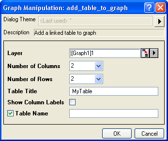
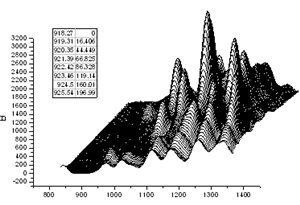
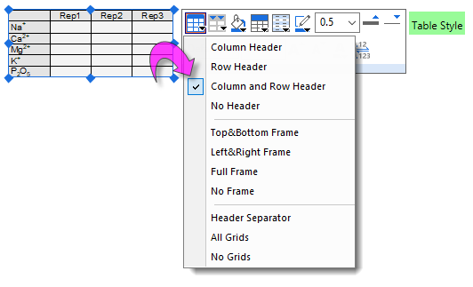
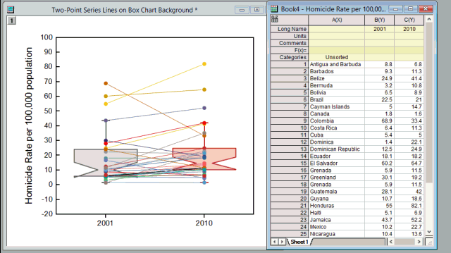

Tabellen in Diagramme einfügen
Graph-InsertTable
Neue Verknüpfungstabelle hinzufügen
Um eine leere Tabelle in das Diagramm- oder Layoutfenster einzufügen:
- Klicken Sie auf die Schaltfläche Neue Verknüpfungstabelle
 auf der Symbolleiste Objekt zu Diagramm hinzufügen.
auf der Symbolleiste Objekt zu Diagramm hinzufügen.
oder
- Klicken Sie mit der rechten Maustaste in den Layer im Grafikfenster (oder klicken Sie mit der rechten Maustaste auf eine leere Stelle im Layoutfenster) und wählen Sie Neue Tabelle... im Kontextmenü.
- In dem nun geöffneten Dialog add_table_to_graph legen Sie die Anzahl der Spalten und Zeilen in der Tabelle, den Tabellentitel etc. fest. Klicken Sie auf die Schaltfläche OK, um diese neue Tabelle zum Fenster hinzuzufügen.

- Klicken Sie doppelt auf ein zu bearbeitendes Tabellenobjekt. Geben Sie die Daten und den Stil der Tabelle mit verankerten Symbolleiten und/oder Minisymbolleisten ein.
Weitere Informationen finden Sie unter X-Funktion add_table_to_graph.
Tabelle durch Kopieren-Einfügen hinzufügen
Sie können einen Bereich von Arbeitsblattwerten -- einschließlich Werte aus einem Analyseberichtsblatt -- kopieren und die Daten in ein Origin-Diagramm einfügen. Die eingebettete Tabelle kann für Präsentations- und Veröffentlichungszwecke bearbeitet werden.
- Eine Gruppe von Zellen aus einem Arbeitsblatt, einschließlich Zellen aus Berichtstabellen in einem Analyseberichtsblatt, kann kopiert und als Tabelle in ein Diagramm eingefügt werden.
- Nicht zusammenhängende Daten können ausgewählt werden, indem Sie die STRG-Taste drücken, während Sie die Zellen mit der Maus auswählen.
- Tabelleninhalte werden dynamisch mit den Quelldaten verknüpft. Änderungen an den Quelldaten werden in der eingebetteten Tabelle übernommen.
- Die Tabelleninhalte können mit Hilfe der Symbolleisten Stil und Format formatiert werden.
- Sie können mehrere Tabellen in das Diagrammfenster einfügen.
- Wählen Sie die Zellen im Arbeitsblatt oder Analyseberichtsblatt aus. Um eine gesamte Berichtstabelle zu kopieren (aus einem Analyseberichtsblatt), klicken Sie mit der rechten Maustaste auf die Tabelle und wählen Sie Tabelle kopieren.
- Um die Tabelle einzufügen, klicken Sie auf das Zieldiagramm oder die Layoutseite und drücken STRG+V oder wählen nach einem Rechtsklick den Befehl Einfügen, Link einfügen oder Link einfügen und transponieren.

Berichtstabelle der Analyseergebnisse hinzufügen

Die meisten von Origins Analysehilfsmitteln unterstützen das Hinzufügen einer Berichtstabelle zu Diagrammen der Analyseergebnisse (z. B. das Hilfsmittel Lineare Anpassung, die Registerkarte Ausgabe). Beim Hinzufügen einer Berichtstabelle können Anwender den Tabelleninhalt durch Öffnen des Dialogs Eigenschaften in Tabelle und Hinzufügen, Entfernen oder Neuanordnen der Eigenschaften benutzerdefiniert anpassen.
Sobald sie hinzugefügt wurde, kann der Anwender mit der benutzerdefinierten Anpassung der Berichtstabelle auf folgende Weisen fortfahren:
- Ein Doppelklick auf eine Berichtstabelle -- entweder in einem Quelldiagramm oder einer im Analyseberichtsblatt eingebetteten Grafik -- öffnet ein Tabellenfenster. Hier können Sie die Schaltflächen auf den Symbolleisten Format und Stil verwenden, um das Aussehen der Tabelle zu modifizieren. (Hinweis: Stellen Sie sicher, auf die Schaltfläche Tabelle aktualisieren der Vorlage zu klicken, wenn Sie fertig sind bzw. die Änderungen noch nicht angewendet wurden.)
- Alternativ können Anwender der neuesten Origin-Versionen die Schaltflächen der Minisymbolleiste verwenden, um das Aussehen der Tabelle zu modifizieren. (Hinweis: Klicken Sie auf die Tabelle, um sie auszuwählen, und die Minisymbolliste wird angezeigt.)
Zusätzliche Informationen sind im folgenden Abschnitt zum Bearbeiten von Tabellen verfügbar.
Tabellen bearbeiten
Beachten Sie, dass Sie für gängige Stile nicht doppelt auf die Tabelle klicken müssen, um ein Popupfenster zu öffnen, wie unten beschrieben. Wählen Sie einfach das Tabellenobjekt im Diagramm- oder Layoutfenster aus und verwenden Sie die Schaltflächen der Minisymbolleiste, um die Tabelle zu modifizieren. 
Hinweis: Klicken Sie auf die Tabelle im Diagramm, um die Bedienelemente zu ziehen und die Größe der Tabelle zu verändern. Die Schriftgröße wird automatisch an die Änderung der Tabellengröße angepasst.
Klicken Sie doppelt auf die Tabelle, um den Bearbeitungsmodus aufzurufen:
- Kopieren Sie die Werte aus Ihrem Arbeitsblatt oder Analyseberichtsblatt und fügen Sie die Daten über Einfügen oder Link einfügen in die Tabelle ein.
- Um einen Bereich der Arbeitsblattwerte zu kopieren, einschließlich Informationen der Spaltenbeschriftungszeilen, siehe das GIF unten.
- Nehmen Sie Ihre Eingabe alternativ direkt in die Tabellenzellen vor.
- In diesem Tabellenbearbeitungsmodus kann der Stil der Auswahl mit Hilfe der Symbolleisten Format und Stil festgelegt werden: Schriftart und Vorder- und Hintergrundfarben können geändert, die Gitternetzlinienhöhe vergrößert werden usw.
- Nach Durchführen der Änderungen stellen Sie sicher, dass Sie auf die Schaltfläche Tabelle aktualisieren des Popupfensters klicken.

 | Das Einfügen des Legendensymbols in die Tabelle im Diagramm wird unterstützt.
- Bearbeitungsmodus der Tabelle öffnen
- Klicken Sie mit der rechten Maustaste auf die Zellen der Tabelle und wählen Sie Zellen formatieren.
- Aktivieren Sie die Option Rich Text im Dialog und klicken Sie auf OK.
- Geben Sie die folgende Notation für das Symbol der Zeichnungslegende in der Tabellenzelle ein.
\l(1) // The legend symbol of 1st plot legend \l(2) // The legend symbol of 2nd plot legend \l([%H]1!1)// The legend symbol of 1st plot legend in layer 1 \l([%H]1!2)// The legend symbol of 2nd plot legend in layer 1 \l([%H]2!1)// The legend symbol of 1st plot legend in layer 2 \l([%H]2!2)// The legend symbol of 2nd plot legend in layer 2
|